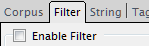
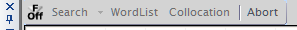
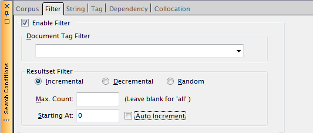
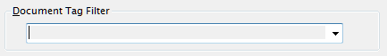
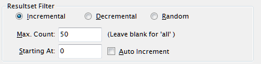

コーパス検索（文検索）・KWIC検索いずれの検索においても、検索条件にフィルタを付けることができます。 フィルタには、検索対象となるドキュメントを限定するための「ドキュメントフィルタ」と、検索結果の一部を KWICリストとして受け取るための「Resultsetフィルタ」の２種類が用意されています。
いずれのフィルタも、"Search Conditions"パネルの"Filter"タブを開き、 "Enable Filter"チェックボックスをチェックした状態で検索を行ったときに有効となります。

このチェックボックスの状態は、"Command"パネルのツールバー左端のボタンと連動しているので、 "Filter"タブから離れていても、"Command"パネル経由でOn/Offが可能です。

このボタンを押すことでもフィルタのOn/Offが可能です。
フィルタをOn状態にすると、フィルタ条件の各入力欄が編集可能状態となります。

ドキュメントタグフィルタ

ここに入力した文字列と完全に一致する書誌情報（ドキュメント属性）を持つドキュメントのみが検索対象となります。 書誌情報はキーと値のペアですが、ここでは固定で"Bib_ID"キーのみを対象として一致判定を行います。 例えば、コーパスに4つのドキュメントがあって、Bib_IDが順に"BK_01", "BK_02", "BK_03", "BK_04"とアサインされている場合、 ここで"BK_01"を指定することで、最初のドキュメントのみが検索対象となります。
書誌情報は、CreateCorpus時に .bibファイル（書誌情報定義ファイル）を明示的に指定するか、フォルダを指定して 作成した場合にのみドキュメントに付加されます。後者の場合はファイル名がBib_IDの値になります。
Resultsetフィルタ

検索により得られる結果(Resultset)に対して、「何番目から（開始位置）」「最大何件まで（件数）」 「どんな順序で（順序）」結果を得るかを指定することができます。
順序
-
Incremental
指定された範囲の先頭から１件ずつ順に結果を取り出します（デフォルト）。
-
Decremental
指定された範囲の末尾から１件ずつ逆順に結果を取り出します。
-
Random
検索結果全体から指定レコード数をランダムに取り出します。疑似乱数を用いています。 Randomを指定した場合、"Starting At"指定は無視されます。
取り出し数が結果の全数を上回る場合はIncrementalと同じことになります。
件数
-
Max Count
取り出したい最大件数を指定します。空白（デフォルト）にした場合はヒットしたすべての結果が得られます。
開始位置
-
Starting At
取り出したい範囲の先頭番号を指定します。この番号は文番号ではなく（複数コーパス検索があるため 文番号は仕様上ここでは使えない）、検索結果のレコード番号となります。 レコード番号はヒット件数がNの場合、最初が0で、末尾が(N-1)になります。デフォルトは"0"つまり先頭位置から 取り出す指定になっています。
なお、Decrementalを指定した場合は、末尾のレコード番号を指定することに注意して下さい。
ヒット件数を超えるレコード番号を指定すると何も結果が得られません。
Auto Increment
この指定はやや特殊なもので、通常はOffとします。
同じ条件で先頭から例えば10レコードずつ取得したい、というような場合に、
Max Countを"10"としてこのスイッチをOnにすると、検索実行のたびに自動的に"Starting At"の値が
10ずつ加算されます。従って、連続して検索すると、(0-9), (10-19), ...といったように10件ごとの
リストが順に得られます。
この条件は、取り出し順序が"Incremental"である時にのみ有効です。
KWIC検索よりも、文抽出検索でコーパス全文を少しずつ見たい場合などに適しています。